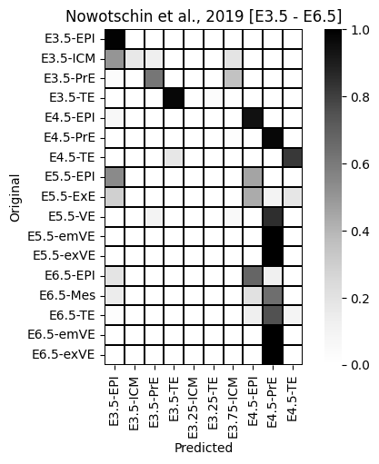

!which pip/projects/dan1/data/Brickman/conda/envs/scvi-1.0.0/bin/pipIn this notebook we test what happens if we go beyond the preimplantation development and how does the scANVI deal with the annotation
!which pip/projects/dan1/data/Brickman/conda/envs/scvi-1.0.0/bin/pip%matplotlib inline
import scvi
import pandas as pd
import numpy as np
import seaborn as sns
import scanpy as sc
import matplotlib.pyplot as plt
from typing import Tuple
from numba.core.errors import NumbaDeprecationWarning, NumbaPendingDeprecationWarning
import warnings
warnings.simplefilter('ignore', category=NumbaDeprecationWarning)
warnings.simplefilter('ignore', category=NumbaPendingDeprecationWarning)
warnings.simplefilter('ignore', category=FutureWarning)
warnings.simplefilter('ignore', category=UserWarning)
scvi.settings.seed = 0
import os
os.environ['CUDA_VISIBLE_DEVICES'] = '3'/projects/dan1/data/Brickman/conda/envs/scvi-1.0.0/lib/python3.10/site-packages/scvi/_settings.py:63: UserWarning: Since v1.0.0, scvi-tools no longer uses a random seed by default. Run `scvi.settings.seed = 0` to reproduce results from previous versions.
self.seed = seed
/projects/dan1/data/Brickman/conda/envs/scvi-1.0.0/lib/python3.10/site-packages/scvi/_settings.py:70: UserWarning: Setting `dl_pin_memory_gpu_training` is deprecated in v1.0 and will be removed in v1.1. Please pass in `pin_memory` to the data loaders instead.
self.dl_pin_memory_gpu_training = (
[rank: 0] Global seed set to 0lvae = scvi.model.SCANVI.load("../results/02_mouse_integration/scanvi_ns_15/")INFO File ../results/02_mouse_integration/scanvi_ns_15/model.pt already downloaded query = sc.read("../data/external/Nowotschin_et_al_2019/sc_endoderm_all_cells.h5ad")
query.var_names = query.var_names.str.lower()
meta = pd.read_csv("../data/external/Nowotschin_et_al_2019/e35_cell_types.csv", index_col=0)query = query[query.obs.Timepoint.isin(['E3.5', 'E4.5', 'E5.5', 'E6.5'])].copy()
query.obs.CellType = query.obs.CellType.astype(str)
query.obs.loc[meta.index, 'CellType'] = meta.CellTypequery.obs['experiment'] = 'Nowotschin et al., 2019'
query.layers['counts'] = query.X
query.obs['batch'] = query.obs.Timepoint
# query.obs['ct'] = query.obs[['Timepoint', 'CellType']].agg('-'.join, axis=1)If going beyond annotation, it will throw an error
If we set query.obs['ct'] = query.obs[['Timepoint', 'CellType']].agg('-'.join, axis=1) we get an error
ValueError: Category E5.5-EPI not found in source registry. Cannot transfer setup without `extend_categories = True`.Ref: https://discourse.scverse.org/t/dont-extend-labels-for-query-data/1196/2
scvi.model.SCVI.prepare_query_anndata(query, lvae)
lvae_q = scvi.model.SCANVI.load_query_data(query, lvae)
lvae_q.train(
max_epochs=100,
plan_kwargs=dict(weight_decay=0.0),
check_val_every_n_epoch=10,
# early_stopping=True
)
query.obsm["X_scANVI"] = lvae_q.get_latent_representation()
query.obs["predictions"] = lvae_q.predict()
query.obs['entropy'] = 1 - lvae_q.predict(soft=True).max(axis=1)INFO Found 77.63333333333333% reference vars in query data.
INFO Training for 100 epochs.
Epoch 100/100: 100%|███████████████████████████████████████████████████| 100/100 [05:35<00:00, 3.38s/it, v_num=1, train_loss_step=1.55e+3, train_loss_epoch=1.58e+3]Epoch 100/100: 100%|███████████████████████████████████████████████████| 100/100 [05:35<00:00, 3.36s/it, v_num=1, train_loss_step=1.55e+3, train_loss_epoch=1.58e+3]GPU available: True (cuda), used: True
TPU available: False, using: 0 TPU cores
IPU available: False, using: 0 IPUs
HPU available: False, using: 0 HPUs
LOCAL_RANK: 0 - CUDA_VISIBLE_DEVICES: [3]
`Trainer.fit` stopped: `max_epochs=100` reached.query.obs['orig'] = query.obs[['Timepoint', 'CellType']].agg('-'.join, axis=1)_ = sns.heatmap(sc.metrics.confusion_matrix('orig', 'predictions', data=query.obs), cmap='Greys', square=True, linewidth=0.2, linecolor='black').set(ylabel='Original', xlabel='Predicted', title='Nowotschin et al., 2019 [E3.5 - E6.5]')